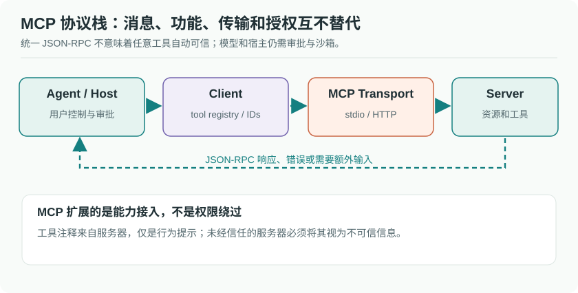
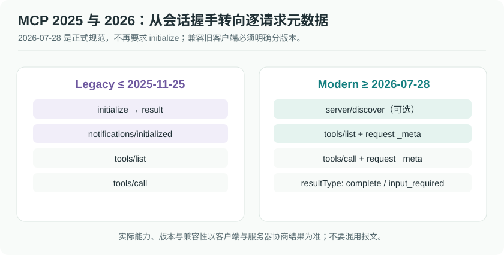

MCP 协议 2026：从旧版握手到逐请求元数据
按 2026-07-28 正式规范解释 JSON-RPC、工具 Schema、stdio/Streamable HTTP 与旧版 2025 协议兼容；特别区分产品 Transport 和协议标准。
协议解决什么问题，又不解决什么问题
一个 Coding Agent 可以使用文件阅读、GitHub 数据、数据库查询和浏览器工具。若每个客户端都定制一套格式，工具名、参数、结果和错误便难以复用。MCP（Model Context Protocol）定义模型客户端与外部服务器交换工具、资源、提示等能力的公开协议。
但协议统一并不等于权限统一：客户端仍需决定是否向模型暴露某工具，是否要求用户审批，是否限制网络和文件系统访问。即使远端工具元数据声明“只读”，在未确认来源之前也不能据此取消安全控制。

2026-07-28：理解两个协议时代
截至本章核查的 2026 年 11 月，现行 MCP 2026-07-28 规范已改变基本生命周期。**现代协议没有会话级 initialize/notifications/initialized 握手**；请求通过 params._meta 发送协议版本与能力。服务器可通过 server/discover 暴露兼容版本；不支持版本时必须返回指定的 JSON-RPC 错误。
旧版 2025-11-25 及之前的客户端使用会话握手、不同传输与结果格式；互通需要显式的兼容层，不能照搬旧教程。

JSON-RPC 与工具调用的最小契约
所有请求有 jsonrpc:"2.0"、唯一 ID、method 与 params，响应关联同一 ID。现代 tools/list 结果包含 resultType:"complete"、工具定义与可能的分页信息；tools/call 返回结构化或内容块结果，还可能通过 resultType:"input_required" 请求额外输入。
{
"jsonrpc": "2.0", "id": 7,
"method": "tools/call",
"params": {
"name": "get_weather",
"arguments": {"location": "Berlin"},
"_meta": {
"io.modelcontextprotocol/protocolVersion": "2026-07-28",
"io.modelcontextprotocol/clientInfo": {
"name": "example-client", "version": "1.0"
},
"io.modelcontextprotocol/clientCapabilities": {}
}
}
}这只是精简请求示意；实际 HTTP 绑定还要按标准设置版本与路由相关 Header，并处理认证和 SSE 响应。
现代传输：stdio 与 Streamable HTTP
| 绑定 | 消息帧 | 适用场景与风险 |
|---|---|---|
| stdio | 单行 UTF-8 JSON-RPC，以换行分隔 | 本地进程；stdout 只能放协议消息、日志进 stderr |
| Streamable HTTP | 单 MCP 端点 POST；响应 JSON 或请求级 SSE | 远程服务器，需 HTTPS、认证、版本 Header 与网络限制 |
| 自定义 Transport | 可扩展绑定但不得改变核心语义 | 要文档化帧结构、取消与身份边界 |
2026-07-28 的现代 HTTP 不再要求持久 GET Stream 或协议级 Session。Claude Code 产品还公开提供兼容旧版 SSE 与可选 WebSocket 服务器配置；**产品支持的连接类型**不应混同为**基础规范列出的标准传输类型**。
Schema、Annotations 与工具安全
每个服务器可以提供 tools/list 中的名称、描述、inputSchema、可选 outputSchema 和 annotations。Schema 帮助模型构造参数，但必须由服务器再次校验。Annotations 描述行为，例如只读/破坏性意图，却不构成信任证明：规范要求把不可信服务器的工具注释当作不可信信息。
现代规范还允许通过 x-mcp-header 将满足特定类型的参数映射成 HTTP Header，因此不应把密钥、个人信息等敏感参数标记为可镜像到 Header。
错误不能消失
JSON-RPC 协议层 error、工具调用业务层 isError 和 input_required 是不同状态，不能都当作工具成功并直接继续下一轮。
多轮交互与服务器请求模式的新变化
旧 MCP 可以有服务器向客户端发起的独立请求；现代规范将需要额外输入的任务表示为客户端发起请求的 input_required 结果，客户端在新请求中携带 inputResponses 与可能的 requestState。例如需要用户提供登录名时，宿主应显示请求、获得真实输入再重试，而不是让模型伪造用户授权。
同时，客户端必须理解 tools/list 的分页和缓存机制，以及令服务器动态更新工具清单的通知/订阅机制；在工具集合较大的环境中，应避免每轮加载所有 Schema。
不联网也能理解版本差异的报文生成器
examples/mcp_protocol.py 使用标准库生成两个版本的示例报文并验证响应 ID、错误和 resultType。
modern = request("tools/list", 7, {})
assert modern["params"]["_meta"][
"io.modelcontextprotocol/protocolVersion"
] == "2026-07-28"
legacy = legacy_initialize()
assert legacy["method"] == "initialize"
# request("initialize", 1) # 现代模式会拒绝运行 python3 -m unittest discover -s examples -p 'test_*.py'。测试包含输入必填 _meta、旧版握手、ID 不匹配、未知 resultType 与工具需要进一步输入的分支。
result 的代码可能错判现代协议的 input_required。官方规范与版本边界
- MCP 2026-07-28 概览 — 最新协议结构与 JSON-RPC
- MCP 版本兼容 — Modern / Legacy 兼容和错误
- MCP 标准传输 — stdio 与 Streamable HTTP
- MCP Tools — resultType、Annotations、Schema、input_required
- Claude Code MCP — CLI 支持的 server 连接选项与工具管理
例子以 2026-07-28 和 2025-11-25 的公开规范为对象；离线 Python 代码不是 MCP SDK，也不执行网络握手。